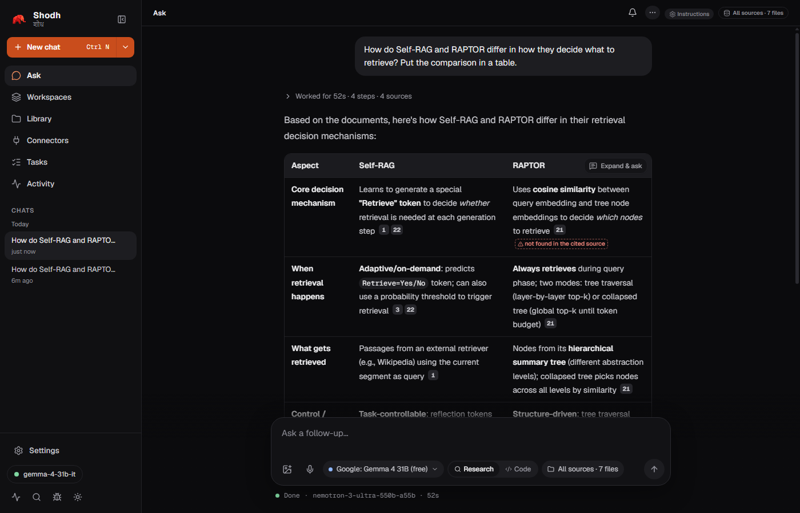
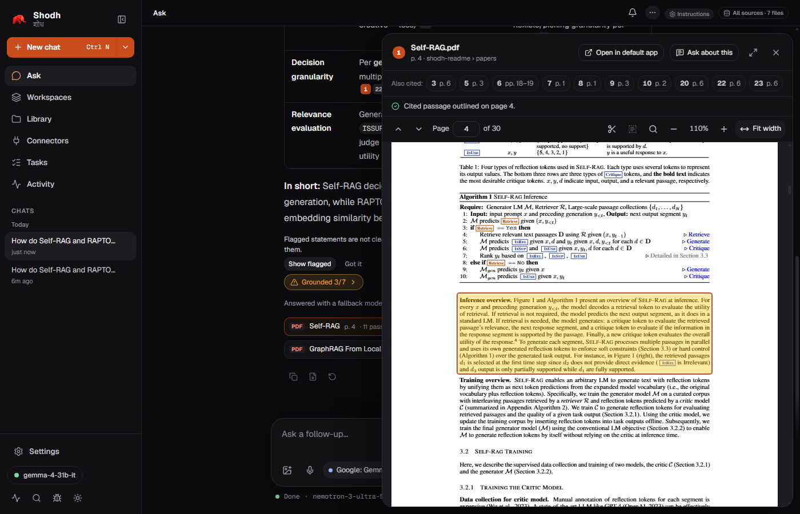
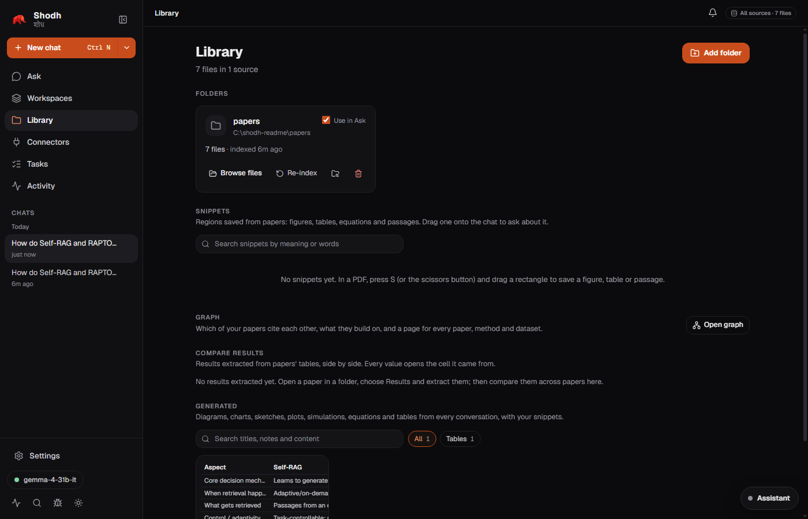

Ask your papers. Get answers cited to the exact page.
Shodh is an open-source, local-first alternative to ChatGPT and NotebookLM. Chat, research and build with the model you choose, local (Ollama, LM Studio) or cloud with your own key. Your documents are indexed and stored on your computer, every answer cites the file and page it came from, and every cited statement is checked against its source.
Free and open source (Apache-2.0). All files and checksums are on the release page. The installers are not code-signed yet, so your system warns you once: how to open it.

What it does
-
Answers cited to the page
Answers stream in with numbered citations. Click one and the PDF opens at the cited page with the passage outlined.
-
Citations that are checked
Each cited statement is checked on your computer against its passage, with no language model judging. Statements the source does not back are flagged inline.
-
Folders that stay in sync
PDF, Word, PowerPoint, spreadsheets, Markdown, LaTeX, HTML, e-books, emails and code. Scanned pages and images are read with OCR.
-
Built for research papers
A graph of how your papers cite each other, read from their bibliographies, and numeric results compared across papers, every value cited.
-
Workspaces and memory
Each workspace has its own sources and instructions. Shodh remembers what you ask it to remember, and keeps your tasks and calendar.
-
The model you choose
A local model through Ollama or LM Studio, or OpenRouter, Anthropic, OpenAI, Google Gemini or xAI with your key, or a subscription sign-in.


The screenshots show open-access papers (CC BY 4.0, from arXiv). The full feature list is on GitHub.
How it is different
Local-first
Your files are parsed, OCR'd, indexed and embedded on your computer, and the index stays there. Nothing is uploaded to build it.
Cited to the page, then checked
A citation points at the file, the page and the passage. Shodh then checks each cited statement against that passage and tells you when it does not hold.
Open source
The app and its Rust core are Apache-2.0. You can read the code behind every answer, and build the app yourself.
Privacy
- Your documents
- Their text, OCR results and embeddings stay on your computer. Indexing makes no network calls.
- Your questions
- A question, and the passages retrieved to answer it, go to the model provider you choose, with your workspace instructions and any memories recalled for it. With a local model and web access off, they stay on your computer.
- Other connections
- Only for features you use: web search, paper lookups, model downloads, the update check, and the Slack, Telegram, GitHub and phone connections once you set them up.
- Local-only mode
- One switch in Settings turns off web tools, cloud models and the update check.
Every outbound connection, and the known gaps such as unencrypted storage, are listed in Data and privacy.
FAQ
Is it free?
Yes. Shodh is open source under the Apache-2.0 licence. A cloud model may cost you through its provider; a local model does not.
Does it work without the internet?
Indexing and search do. The first run downloads the search models (about 650 MB) and the agent runtime once. To answer questions offline, use a local model through Ollama or LM Studio.
Which computers does it run on?
Windows 10 or 11 (64-bit) and macOS 13.3 or later on Apple silicon. There is no Intel Mac build. The Android app is a companion that pairs with Shodh on your computer.
Why does my system warn me when I open it?
The installers are not code-signed yet. The download steps show how to open Shodh the first time on Windows and macOS. Updates are signed, and one whose signature does not verify is refused.
What files can it read?
PDF, Word, PowerPoint, OpenDocument, RTF, spreadsheets and CSV, Markdown, LaTeX, HTML, e-books, emails, notebooks, plain text and source code, plus scanned PDFs and images through OCR.